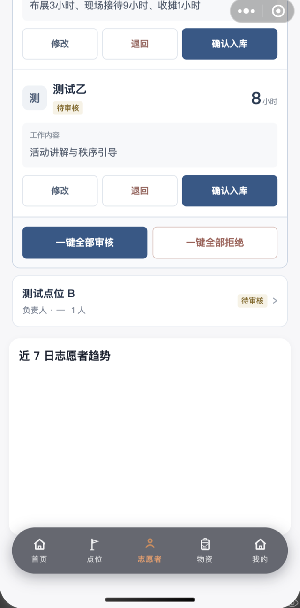
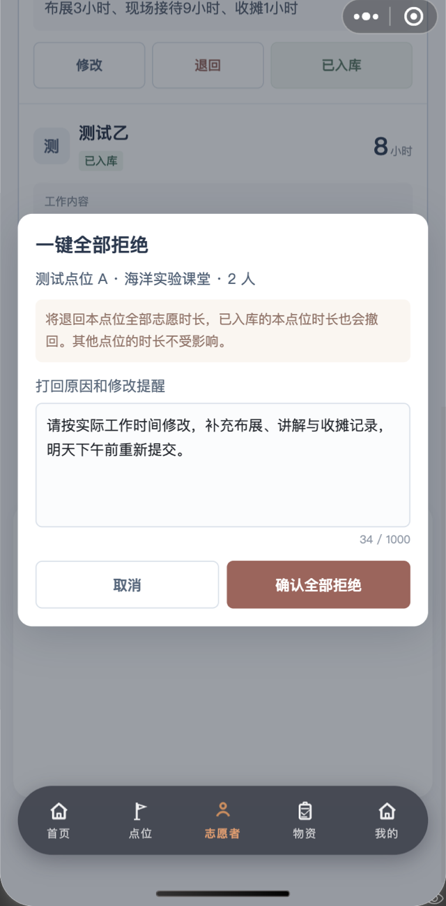

参与者
扫码报名、填志愿、看结果。微信里直接打开，不用安装，也不用再记一个账号密码。
一场活动最麻烦的不是报名本身，而是报名之后的审核、调整和通知。小程序适合把这条链路装在一起。
扫码报名、填志愿、看结果。微信里直接打开，不用安装，也不用再记一个账号密码。
按点位提交需求和人员名单，实时看本组的报名与物资，不用在群里反复对表。
批量审核、调整名额、一键分配，所有人的状态在同一个后台里更新。
厦门大学海洋与地球学院科普开放日使用的志愿者系统，已发布为「MEL海洋科学开放日」小程序体验版，微信云开发托管。

负责人按点位提交志愿时长，管理员逐条确认、退回或修改，也能一键全部审核。

退回时写清楚原因，负责人改完重新提交。提交值和审核值并排对照，改过哪一项一目了然。
审核、留言回复、招募进度、系统公告统一进消息中心，按类型筛选，不用翻群聊。
多志愿填报、名额限制、资格校验（学号、历史名单）、重复报名拦截。
逐条审核、批量操作、提交值与审核值对照，按岗位完成度自动给出分配建议。
按点位申报物资、汇总清单；扫码签到、现场核销，数据实时汇总到管理端。
订阅消息提醒、分享卡片、群内二维码、微信登录，用户不用离开微信。
用微信云开发做数据和存储，小程序端直接调用，不需要另外买服务器、配域名、做备案。活动结束数据还在，下次活动接着用。
网络异常时自动降级到本机演示模式，流程不中断；现场断网也能先把数据记下来。
报名谁填、谁审、名额怎么分。先把角色和状态理清楚，再动界面。
用可点的原型走一遍完整流程，确认表单字段和审核规则。
小程序前端加云开发，含权限、校验、消息和后台管理。
提审、发布、生成二维码；活动当天有人盯数据。
一张活动流程图和现有的表格（报名表、物资表）就够。没有的话，我们可以一起把流程理出来。
一个表单加审核的小程序通常按周计；涉及多角色、分配算法和消息通知，按月计。
小程序本身走微信的备案流程，不需要另外买域名和服务器。我们负责提交材料，主体资质需要你这边提供。
在你自己名下的云开发环境里，我们只给你账号下的项目做开发，不托管你的数据。
能。参与者用微信直接打开，组织者用微信登录后台，不需要额外装 App 或记账号。